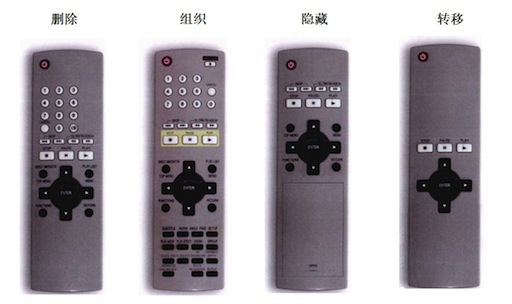

前言
第1章 话说简单
关于简单的故事
简单的力量
不是那种简单法
特征
貌似简单
了解自己
第2章 明确认识
描述要点的两种方式
走出办公室
观察什么
三种用户
为什么应该忽略专家型用户
为主流用户而设计
主流用户要什么
感情需求
简单意味着控制
正确选择“什么”
描述用户体验
讲故事
环境、角色、情节
极端的可用性
简便的方式
洞察力
明确认识
分享
第3章 简约四策略
四个策略
第4章 删除
避免错删
关注核心
砍掉残缺功能
假如用户......
但我们的用户想要
方案，不是流程
如果功能不是必要的
真有影响吗
排定功能优先级
负担
决策
分心
聪明的默认值
选项和首选项
如果一个选项还嫌多
错误
视觉混乱
删除文字
精简句子
删减过多
你能做到
焦点
第5章 组织
分块
围绕行为进行组织
是非分明
字母表
搜索
时间和空间
网格
大小和位置
分层
色标
期望路径
第6章 隐藏
不常用但不能少
自定义
自动定制
渐进展示
阶段展示
适时出现
提示与线索
让功能容易找到
隐藏的要求
第7章 转移
第8章 最后的叮嘱
Published with GitBook
四个策略
四个策略
简化DVD遥控器的方案，大致分为四大类
删除 -- 去掉所有不必要的按钮，直至减到不能再减。
组织 -- 按照有意义的标准将按钮划分成组。
隐藏 -- 把那些不是最重要的按钮安排在活动仓盖之下，避免分散用户注意力。
转移 -- 只在遥控器上保留具备最基本功能的按钮，将其它控制器转移到电视屏幕上的菜单里，从而将复杂性转移到电视。
这四个策略适用于简化功能，也适用于简化内容。而且，无论项目大小--是整个网站，还是其中一个页面，这四个策略都同样适用。

results matching "
"
No results matching "
"